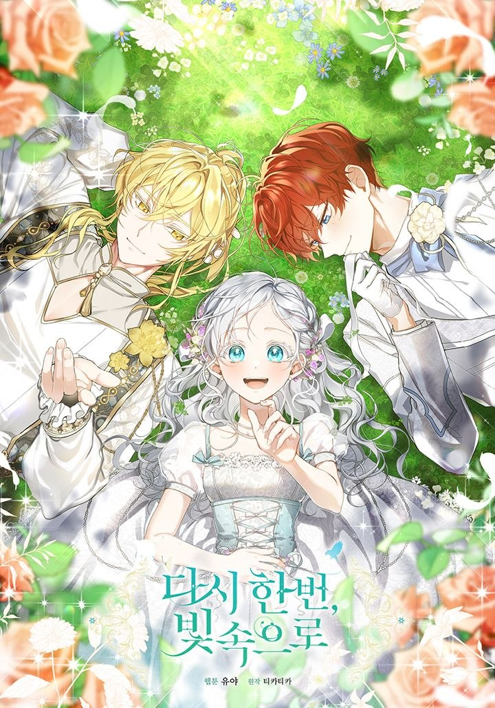

Mais uma vez Até a Luz
Fui falsamente acusada de tentar matar a minha irmã mais nova, que era venerada como uma santa. Não havia uma única pessoa que acreditasse em mim, nem havia uma pessoa que me defendesse. Nem sequer a minha família de sangue. Eu tinha 14 anos de idade, e era Inverno. Eu, que era a Quarta Princesa de Edenbell, fui miseravelmente decapitada na frente do povo. Após a minha morte, acordei e o que veio foi… “A minha bebê, a minha preciosa irmã mais nova”. Com um sorriso encantador, ele segurou os meus pequenos dedos. Aquele gesto caloroso, calor e toque. Ele cantou uma canção de ninar enquanto me segurava suavemente e balançava.